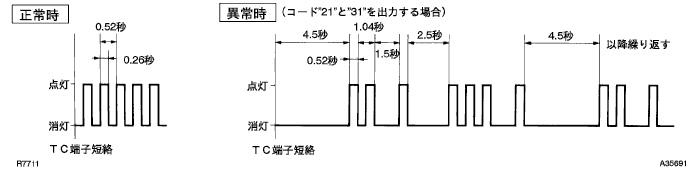

|
SSTを使用して、DLC3の13(TC)←→4(CG)端子間を短絡する。
- SST
- 09843-18040
- ■ 注 意 ■
- 故障の原因となるため、短絡位置を絶対に間違えない。
イグニッションスイッチをONにする。
ダイアグノーシスコード(チェックエンジンウォーニングランプの点滅回数)を読み取る。

- □ 参 考 □
- 正常の場合は、0.26秒点灯、0.26秒消灯を繰り返す。
- ダイアグコードが1つの場合は、4.5秒の間隔をおいて同一コードを出力し、複数のコードを出力する場合は、異なるコードを2.5秒間隔で出力する。また、一巡すると4.5秒の間隔をおいて再度出力する。
- 2つ以上のコード番号が出力される場合は、コード番号の小さい順に表示する。
イグニッションスイッチをOFFにする。
DLC3の13(TC)←→4(CG)端子間を開放する。